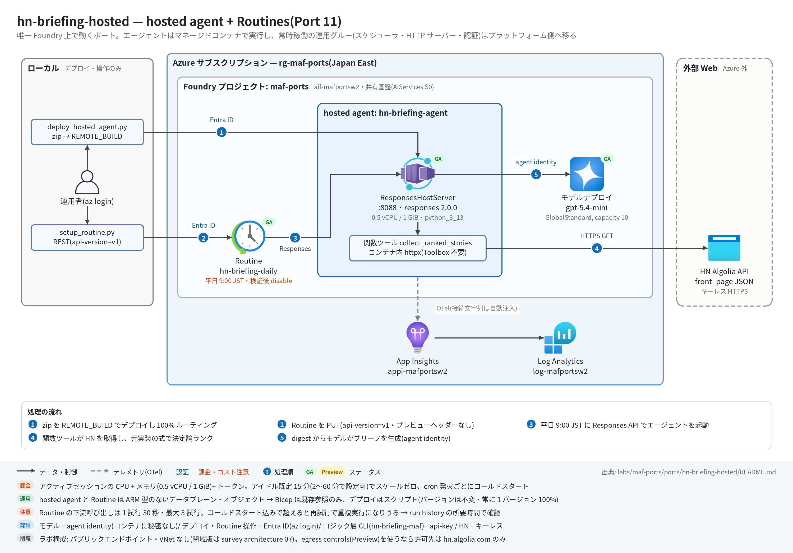

hn-briefing-hosted 実行ガイド
対象:
labs/maf-ports/ports/hn-briefing-hosted/(Port 11・パターン: hosted agent + Routines — 同じ決定論ロジックを「クライアント実行の MAF ワークフロー」と「Foundry 上の hosted agent(スケジュール起動)」の二形態で動かす)
最終確認: 2026-09-29 オフライン(48 passed・ruff check .clean・依存 agent-framework-core 1.19.0 / agent-framework-foundry-hosting 1.0.0b260918 / azure-ai-agentserver-responses 2.2.0 / azure-ai-projects 2.6.1)/ ライブ: 2026-07-31(当時の構成 core 1.13 / hosting 1.0.0b260730 / Routines プレビュー+Routines=V1Previewヘッダー。Azure リソースは削除済み — 再デプロイ手順は §5)
正は本 Markdown。 人間用 HTML(同じディレクトリのrunbook.html)はpython3 labs/tools/build_runbooks.pyで生成する(HTML は直接編集しない)。設計判断と移植の学びは README。
1. このパターンで確かめること
- ロジック層(CLI):
collect(HN Algolia・httpx)→rank(元実装の決定論スコア式)→brief(MAFAgent)が直列に 1 回ずつ動き、スコア降順の記事 + LLM が編集したブリーフ本文(brief_md)が出ること。 - ホスティング層: 同じ決定論コードを関数ツール
collect_ranked_storiesに包んだエージェントが hosted agent(Responses protocol 2.0.0)として動き、コンテナ内の httpx で HN を取りに行けること(= 「hosted はツールを定義に直付けできない」制約は Foundry 管理ツールの話で、自前コードのツールには効かない)。 - Routine(2026-09 GA): schedule トリガーの Routine が hosted agent を Responses API 経由で起動し、手動発火(
:dispatch_async)の結果が run history にFINISHEDで残ること。 - 技術選定上の意味: 常時稼働の運用グルー(HTTP サーバー・スケジューラ・認証)が Foundry 側へ移り、代わりに「zip 規約+provisioning ポーリング+不変バージョン」というデプロイ語彙とコールドスタートを引き受ける(README の学び 1・2・4)。
2. 構成

【ロジック層(CLI・ローカル実行)】
BriefingRequest ─▶ collect(HN Algolia)─▶ rank(決定論)─▶ brief(MAF Agent)─▶ Brief
└ StageDone 進捗(collect / rank)→ stderr
【ホスティング層(Foundry)】
Routine hn-briefing-daily(schedule 0 9 * * 1-5, Asia/Tokyo, api-version=v1)
└─▶ invoke_agent_responses_api ─▶ hosted agent hn-briefing-agent
hosting/main.py: ResponsesHostServer(Agent(FoundryChatClient(agent identity)))
└ 関数ツール collect_ranked_stories(コンテナ内 httpx → Algolia → 決定論ランク → digest)| コンポーネント | 役割 | 課金 |
|---|---|---|
MAF Workflow(ローカル、workflow.py) |
collect / rank / brief の 3 Executor 直列 |
なし |
HN Algolia API(hn.algolia.com) |
tags=front_page の JSON をキーレスで取得 |
なし(外部サイト) |
| モデルデプロイ(共有基盤、既定 gpt-5.4-mini) | CLI のブリーフ本文 / hosted エージェントの推論 | トークン従量 |
hosted agent hn-briefing-agent(0.5 vCPU / 1 GiB・python_3_13・REMOTE_BUILD) |
ResponsesHostServer が :8088 で Responses を受け、関数ツールで digest を取って応答 |
アクティブセッション中の CPU/メモリ(idle timeout 既定 15 分でスケールゼロ) |
Routine hn-briefing-daily |
平日 9:00 JST に hosted agent を起動(1 トリガー+1 アクション) | 起動ごとに hosted のセッション+トークン |
| App Insights(共有基盤) | CLI は configure_azure_monitor、hosted はプラットフォームが接続文字列を自動注入 |
取り込み量従量 |
3. 前提
| 区分 | 必要なもの | 備考 |
|---|---|---|
| ツール | uv(Python 3.11 以上。uv が取得。検証は 3.13)。ライブは Azure CLI(az login) |
オフライン実行は uv だけ |
| Azure(ライブのみ) | 共有基盤(infra/shared.bicep)のみ。本ポート固有の ARM リソースはない(hosted agent と Routine はデータプレーンのオブジェクト。infra/main.bicep は existing 参照+出力だけ) |
hosted のセッション課金+トークン |
| リージョン | 共有基盤の Japan East で両機能とも可(hosted agents 対応リージョン / Routines は UK West・Switzerland West・Japan West・UAE North・Norway East 以外) | Japan West を選ぶと Routines 不可 |
| 権限 | デプロイ実行者: Foundry Project Manager(プロジェクト。create_version_from_code / update_details)。Routine 操作: Foundry User 以上。hosted の agent identity はプロジェクト内のモデル推論に暗黙アクセスがありロール割り当て不要。CLI のモデル呼び出しは api-key |
RBAC 伝播に 5〜15 分 |
| ネットワーク | ローカルとコンテナの双方から hn.algolia.com への外向き HTTPS |
egress controls(プレビュー)を使う場合はこのホストを Allow |
環境変数(labs/maf-ports/.env。雛形は .env.example。読み込み順はカレントの .env → lab ルートの .env で、既にシェルにある値が優先):
| 変数 | 用途 | 取得元 |
|---|---|---|
FOUNDRY_OPENAI_V1_ENDPOINT |
CLI のモデル呼び出し先。必須(deploy / routine スクリプトも起動時に検証する) | shared.bicep の出力 openaiV1Endpoint |
FOUNDRY_MODEL |
モデルデプロイ名。必須。deploy 時はコンテナの FOUNDRY_MODEL_NAME にも転記される |
shared.bicep の出力 modelDeploymentName |
FOUNDRY_API_KEY |
CLI の api-key 認証。必須(hosted には渡さない) | az cognitiveservices account keys list -n <foundryName> -g <rg> --query key1 -o tsv |
FOUNDRY_PROJECT_ENDPOINT |
hosted のデプロイ・Routine 操作・hosted スモーク。CLI には不要 | shared.bicep の出力 projectEndpoint |
HN_BRIEFING_AGENT_NAME |
hosted agent 名(既定 hn-briefing-agent)。デプロイ・Routine・スモークで共有 |
任意 |
APPLICATIONINSIGHTS_CONNECTION_STRING |
CLI のトレース送信先(任意。hosted は自動注入) | shared.bicep の出力 appInsightsConnectionString |
HN_BRIEFING_HOSTED_SMOKE |
1 のときだけ hosted のライブスモークを実行 |
手で設定 |
コンテナ側の環境変数(.env ではなくデプロイ定義で渡る。バージョンごとに不変): FOUNDRY_PROJECT_ENDPOINT / FOUNDRY_MODEL_NAME(hosting/main.py は AZURE_AI_MODEL_DEPLOYMENT_NAME も受ける)。API キーは渡さない。
4. オフライン実行(Azure 不要・無料)
cd labs/maf-ports/ports/hn-briefing-hosted
uv sync --extra dev --extra hosting # hosting = ResponsesHostServer の実構築テストに必要(無いと 1 件 skip)
uv run pytest # 期待: 48 passed, 2 deselected(live は既定で除外。ネットワーク不要)
uv run ruff check . # 期待: All checks passed!(図生成スクリプト docs/architecture.py を含む)送信せずに中身だけ確かめる(Azure 呼び出しなし。ただし設定検証のため必須 3 変数+FOUNDRY_PROJECT_ENDPOINT は要る — 未作成ならダミー値でよい):
uv run python hosting/deploy_hosted_agent.py --dry-run # zip 内容とバージョン定義
uv run python scripts/setup_routine.py create --dry-run # Routine のペイロード期待される出力の例(--dry-run。エンドポイントはダミー):
zip: 14 files — hn_briefing_maf/__init__.py, hn_briefing_maf/agents.py, ... ← stderr
{
"agent_name": "hn-briefing-agent",
"cpu": "0.5",
"memory": "1Gi",
"runtime": "python_3_13",
"entry_point": ["python", "main.py"],
"environment_variables": {"FOUNDRY_PROJECT_ENDPOINT": "https://...", "FOUNDRY_MODEL_NAME": "gpt-5.4-mini"},
"protocols": [["responses", "2.0.0"]]
}コンテナ相当をローカルで起動する(/readiness まではオフラインで確認できる。POST /responses はモデル呼び出しに Entra 認証と共有基盤が要る):
PORT=8088 FOUNDRY_PROJECT_ENDPOINT=https://<foundry>.services.ai.azure.com/api/projects/maf-ports \
FOUNDRY_MODEL_NAME=gpt-5.4-mini uv run python hosting/main.py &
curl -sS -i http://localhost:8088/readiness # 期待: HTTP 200、x-platform-server に azure-ai-agentserver-core/2.2.0 … responses/2.2.0
# 共有基盤があり az login 済みなら本物の応答も取れる:
curl -sS -H "Content-Type: application/json" -X POST http://localhost:8088/responses \
-d '{"input": "Give me today'\''s brief (top 3).", "stream": false}'オフラインテストが固定している主な挙動:
- 収集: Algolia の hit を
Storyに写像して応答順で rank を振り、urlが null なら HN の URL に、HTTP エラーはCollectErrorにする(test_parse_maps_hit_fields_and_assigns_positional_rank/test_parse_falls_back_to_hn_url_when_url_is_null/test_fetch_raises_collect_error_on_http_error) - ランキング: 元実装を実行して採ったゴールデンスコアを再現し、入力順をシャッフルしても結果が同じ。ノイズ除去と
top_nを守る(test_golden_scores_match_original_implementation/test_curate_is_deterministic_under_input_shuffle/test_curate_drops_noise_and_respects_top_n) - 元実装の癖の保存: キーワード 0 件の記事も fallback summary 経由でフィルタを通る(
test_keywordless_story_passes_filter_via_fallback_summary) - ワークフロー:
collect → rank → briefの順に動き、進捗StageDoneが流れ、CollectErrorは握りつぶさず伝播する(test_sequential_flow_collect_rank_brief/test_collect_error_propagates) - hosted 配線: 関数ツールが digest を返し
top_nを 1〜10 にクランプ、エージェントは instructions+ツール 1 本+store=False、hosting/main.pyを実 import してResponsesHostServerを構築できる(test_collect_tool_returns_ranked_digest/test_agent_wires_instructions_and_collect_tool/test_hosting_main_imports_and_builds_server_without_running) - デプロイ zip 規約: zip ルートに
main.py/requirements.txt/hn_briefing_maf/、__pycache__と deploy スクリプトは入れない。定義は responses 2.0.0、コンテナ環境変数はエンドポイントとモデル名だけ(test_staged_zip_places_entrypoint_and_package_at_root/test_definition_kwargs_encode_container_protocol_2_and_keyless_env) - Routine 契約: schedule トリガー+
invoke_agent_responses_api、既定 cron は平日 9:00 JST、URL は?api-version=v1、ヘッダーは Bearer のみ(Foundry-Featuresなし)(test_routine_payload_matches_rest_schema/test_routine_url_and_headers) - 評価データセット 8 ケース(keyword 4 / noise 2 / rank_order 2)がランキング実装と一致する(
test_eval_dataset.py)
5. ライブ実行(Azure 必要・課金あり)
5.1 デプロイ
共有基盤(Foundry アカウント+プロジェクト+モデル+App Insights)が未作成なら先に 共有基盤の実行ガイド §5 で作り、§5.5 の手順で .env に転記する。
# 共有基盤が未作成なら先に作る(→ labs/maf-ports/infra/docs/runbook.md)。本ポート固有の ARM リソースはない。
cd labs/maf-ports/ports/hn-briefing-hosted
az deployment group create -g <rg> -f infra/main.bicep -p baseName=<baseName> \
--query properties.outputs -o json # 期待: openaiV1Endpoint / projectEndpoint(.env に転記)
az login # Foundry Project Manager 以上
uv sync --extra dev --extra hosting --extra live
uv run python hosting/deploy_hosted_agent.py --invoke "Give me today's brief (top 3)."期待される出力の例(provisioning は数分。REMOTE_BUILD が hosting/requirements.txt を pip で解決する):
zip: 14 files — hn_briefing_maf/__init__.py, ... ← stderr
created version 1 — provisioning... ← stderr
status=creating ← stderr(10 秒間隔でポーリング)
status=active
routed 100% -> version 1 ← stderr
agent endpoint: {...version_selector... FixedRatio 100 ...} ← stdout
(--invoke の応答: digest の順に並んだ 3 記事の解説+ "Next actions")5.2 実行
# ロジック層(CLI・クライアント実行)
uv run hn-briefing-maf --top-n 3
uv run hn-briefing-maf --json --output runs/brief.json
uv run pytest -m live -k workflow # 実 HN + 実モデル(1 passed が期待)
# ホスティング層(デプロイ済みの hosted agent を 1 回叩く)
HN_BRIEFING_HOSTED_SMOKE=1 uv run pytest -m live -k hosted
# Routine(GA)
uv run python scripts/setup_routine.py create # 平日 9:00 JST(--cron / --time-zone / --input で変更)
uv run python scripts/setup_routine.py dispatch # 手動発火(:dispatch_async)
uv run python scripts/setup_routine.py runs # 実行履歴
uv run python scripts/setup_routine.py disable # 検証後は必ず停止(delete で削除、enable で再開)期待される出力の例(値は実行ごとに変わる):
[collect] 30 stories ← stderr(Algolia の hitsPerPage=30)
[rank] 3 stories ← stderr
AgentScout Hacker News brief - 2026-09-29 ← stdout(日付は America/Los_Angeles 基準)
## 1. <記事タイトル> ... ← brief_md(digest の順を保った解説+ Next actions)HTTP 200 ← setup_routine.py create(201 もありうる。stderr)
{ "name": "hn-briefing-daily", "enabled": true, "triggers": {...}, "created_at": ..., ... }
HTTP 200 ← dispatch
{ "dispatch_id": "...", "action_correlation_id": "...", "task_id": "..." }
HTTP 200 ← runs
{ "data": [ { "status": "FINISHED", "phase": "completed", "trigger_type": ..., "started_at": ..., "ended_at": ..., "dispatch_id": ..., "response_id": ... } ] }終了コード: CLI は 正常 0 / 設定不足 2 / 収集失敗・タイムアウト(既定 180 秒)・ブリーフなし 1。スクリプトは HTTP 4xx/5xx で 1、設定不足で 2。
6. 確認観点
| 確認 | # | 観点 | 確認方法 | 期待結果 | ||
|---|---|---|---|---|---|---|
| 1 | 正常系: CLI のブリーフ生成 | uv run hn-briefing-maf --json --output runs/brief.json |
stories がスコア降順(test_live_workflow_generates_brief と同じ判定)、brief_md が digest の記事順を守り(並べ替え・追加なし)、末尾に Next actions |
|||
| 2 | 正常系: hosted のデプロイと応答 | §5.1 の --invoke / hosted スモーク |
version が active になり、応答にランク付き記事(1. やポイント数)が現れる。コンテナに API キーを渡していない(定義の環境変数はエンドポイントとモデル名だけ) |
|||
| 3 | 正常系: Routine の手動発火 | dispatch → 数十秒後に runs |
最新の run が status: FINISHED / phase: completed。response_id からエージェント応答とトレースに辿れる |
|||
| 4 | Routine のタイムアウト余裕 | runs の started_at / ended_at、または ポータルの Routines 画面の所要時間 |
1 試行 30 秒以内に収まる(docs の既定は 1 試行 30 秒・最大 3 試行)。超えると失敗・再試行で hosted が重複実行されうる — コールドスタート込みで測る | |||
| 5 | 異常系: 設定不足 | FOUNDRY_PROJECT_ENDPOINT を空にして setup_routine.py show(空文字はシェルの値が優先される) |
終了コード 2、stderr に error: FOUNDRY_PROJECT_ENDPOINT が未設定(...) |
|||
| 6 | 異常系: HN 取得失敗 | ネットワーク遮断下で uv run hn-briefing-maf(オフラインでは test_fetch_raises_collect_error_on_http_error が同じ経路) |
終了コード 1、stderr に error: Could not fetch Hacker News (Algolia): ... または HN Algolia API returned HTTP <code> |
|||
| 7 | 観測: トレース着信 | §7 の KQL | CLI: `executor.process collect | rank | brief と invoke_agent hn_briefing_writer。hosted: Responses ホストの invoke_agent スパンと MAF の execute_tool collect_ranked_stories`(ライブ未確認) |
|
| 8 | パターン固有: ツールはコンテナ内で動く | hosted 応答の記事タイトルを当日の HN と照合、またはトレースの execute_tool |
Toolbox なしでコンテナ内 httpx の関数ツールが実行されている(Foundry 管理ツールの直付け制約に該当しない) | |||
| 9 | コスト・後片付け | setup_routine.py show の enabled、ポータルのエージェント一覧 |
検証後は Routine が enabled: false(または削除)。使わない期間は RG ごと削除(§8) |
7. トレース・評価の確認
az monitor app-insights query --app appi-<baseName> -g <rg> \
--analytics-query "dependencies | where timestamp > ago(30m) | summarize count() by name"- CLI(クライアント実行)で期待するスパン名(2026-09-29 にインメモリ OTel で確認。
invoke_agent/chatは実モデル時のみ):workflow.build/workflow.run/executor.process collect|rank|brief/invoke_agent hn_briefing_writer/chat <デプロイ名>/edge_group.process .../message.send。 - hosted: 接続文字列はプラットフォームが注入し、protocol ライブラリが OTel を既定発信する(配線コードなし)。Responses ホストの
invoke_agentスパン(gen_ai.system=responses)と MAF のinvoke_agent hn_briefing_agent/execute_tool collect_ranked_stories/chatが期待値。azure-ai-agentserver-core 2.2 系は既定で HTTPX / Azure SDK の計装を無効化したため、コンテナ内の Algolia GET は dependency として出ない見込み(ライブ未確認。必要ならconfigure_observabilityにinstrumentation_options={"httpx": {"enabled": True}})。 - 評価:
tests/eval_dataset.jsonl(8 ケース)は決定論部分のデータ駆動検証。LLM 部分は--outputの Brief を「digest に忠実か」の rubric 1 本で評価する想定(評価 API の使い方は Port 9 critique-loop)。
8. 片付け
uv run python scripts/setup_routine.py disable # まず無人起動を止める(delete で定義ごと削除)
az group delete -n <rg> --yes --no-wait # 使わない期間は共有基盤の RG ごと削除(hosted agent・Routine も消える)- 再構築は §5.1 の 2 コマンド(deploy →
setup_routine.py create)で戻る(ステートレス)。共有基盤を同じbaseNameで作り直すときの soft delete の注意は 共有基盤の実行ガイド §8。 - hosted agent だけ消す場合、アクティブなセッションがあると DELETE が 409 になる(アイドル化を待つか
force=true)。
9. トラブルシューティング
| 症状 | 原因 | 対処 |
|---|---|---|
| Routine の REST が HTTP 400 | ?api-version=v1 の欠落 |
routine_url() / routines_collection_url() を通す(直書きしない) |
Routine の REST が 4xx で Foundry-Features の値に言及(想定・未観測) |
旧版のスクリプトが Routines=V1Preview を送っている(2026-08 に REST 仕様から削除されたキー) |
ヘッダーを外す(本ポートは 2026-09-29 に削除済み)。SDK client.beta.routines は任意ヘッダー Routines=V2Preview を自動付与する |
| ポータルに Routines が出ない / create が失敗 | リージョン・サブスクリプションで未有効 | 対応リージョン(§3)を確認。出ない場合はアカウントチームへ |
version が failed |
zip レイアウト、または REMOTE_BUILD の pip 解決失敗 | get_version の error.message(pip の最終エラー行が入る)を見る。依存は hosting/requirements.txt と pyproject の hosting extra を揃える |
version が creating のまま 10 分超 |
リモートビルドが requirements.txt を解決できない |
dependency_resolution="bundled" でローカルビルドした依存を同梱する(docs の Troubleshooting) |
--invoke / スモークが 401・403 |
デプロイ実行者のロール不足、または RBAC 伝播待ち | Foundry Project Manager(プロジェクト)を付与して 5〜15 分待つ |
| Routine の run が FAILED(タイムアウト) | 1 試行 30 秒を超過(コールドスタート+HN+ブリーフ生成) | run history で所要時間を確認。--input で記事数を減らす等で短縮 |
ローカルの hosting/main.py が起動しない |
FOUNDRY_PROJECT_ENDPOINT / FOUNDRY_MODEL_NAME 未設定、または hosting extra 未導入 |
両変数を渡し、uv sync --extra dev --extra hosting |
10. 関連・更新履歴
- 設計判断と学び: README
- hosted agent / Routines の機能・GA 状況: features/03-agent-service.md
- 詰まりどころ(P-A11 Routines / P-H13 コールドスタート / P-H20 プレリリースのホスティングライブラリ / P-N07 egress controls): casebook/02-pitfalls-index.md
- 公式: use-routines / deploy-hosted-agent-code / manage-hosted-sessions
| 日付 | 内容 |
|---|---|
| 2026-09-29 | 初版(依存を agent-framework-core 1.19 / foundry-hosting b260918 / agentserver 2.2 へ更新。Routines GA に合わせて Foundry-Features ヘッダーを削除、hosted の requirements に agentserver 3 点を明示。構成図を v2 スタイル(日本語・処理順バッジ)に更新し ruff check . を clean に) |